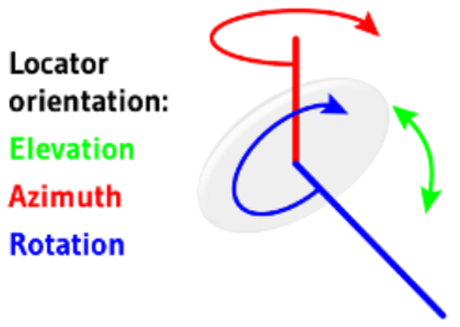
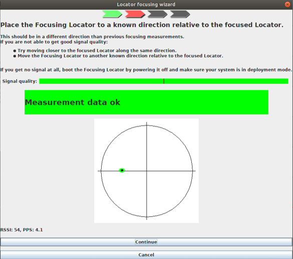
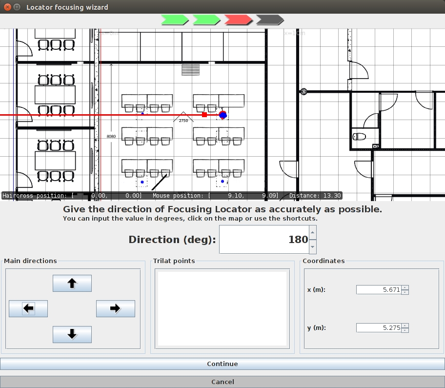

Focus Locators Using Focusing Wizard
Once the Quuppa system is physically installed and the Locators have been positioned and identified in the QSP, the next step is to focus the Locators using the Focusing Wizard. This step measures the orientation of the Locators and is crucial for the system to work properly and be able to provide accurate positioning results as the Locator calculates the position of tracked items based on their own position and orientation.

Note: Q17 Focusing Locator should be connected to a laptop
computer via an Ethernet port and a micro-usb cable. LD-6L Focusing Locator can
no longer be used with release 8.0 and above.
- Open the project in the QSP.
- Select the Locator that you want to focus (using either the map view or the object tree).
- In the panel on the right, open the Deployment tab and click the Start focusing wizard button.
- Check that the Locator's LED is blue and blinking and the Focusing Locator's LED is static blue. If not, check your connections and restart the wizard.
-
Take the first of two focusing measurements:
- Move the Focusing Locator directly to the left, right, up or down (relative to your project's background image) of the selected Locator.
- Point the Focusing Locator towards the Locator that you are focusing and follow the instruction given by the Focusing Wizard. Hold the position until the green bar in the application is full (hold long enough to make sure it is stable and holds the green colour), indicating that the measurement data is OK.
- Click the Continue button.Tip: Make sure you are close enough for good quality signal.

- Give the direction from which you were focusing the Locator by using the
arrows in the Main direction box. The red line on
the map indicates the given direction. Once you are satisfied with the
direction, click Continue.

- Move the Focusing Locator around to verify that the direction is
correct. The black line on the map should point to the direction of the
Focusing Locator.
- If the direction is correct, click Accept results and measure this Locator again at different position.
- If the direction is incorrect, click Ignore
this measurement and keep old data. Note: Remember that the information you give the system at this stage will affect the tracking accuracy later. Only accept the results and continue if the direction looks right.
-
Take the second of two focusing measurements.
Important: The wizard will calculate the error between the two measurements. Try to get the error level below 4.0. If the error level is above 4.0, you can redo the focusing measurements by following these steps: Click Accept results and exits, then select the Deployment tab in the panel on the right and click the Clear measurement data button. Now you can start focusing the Locators again.
Once you have focused the Locator from two different direction and are satisfied with the result, click Accept results and exit.
-
Repeat the focusing process for each Locator.
Tip: To check that the location tracking works, you can go to the Deployment menu in the menu bar at the top and select Show Focusing Locator. Move the Focusing Locator around the tracking area and monitor the position of the Focusing Locator in the QSP. To stop the monitoring, go to the Deployment menu and select Hide Focusing Locator.